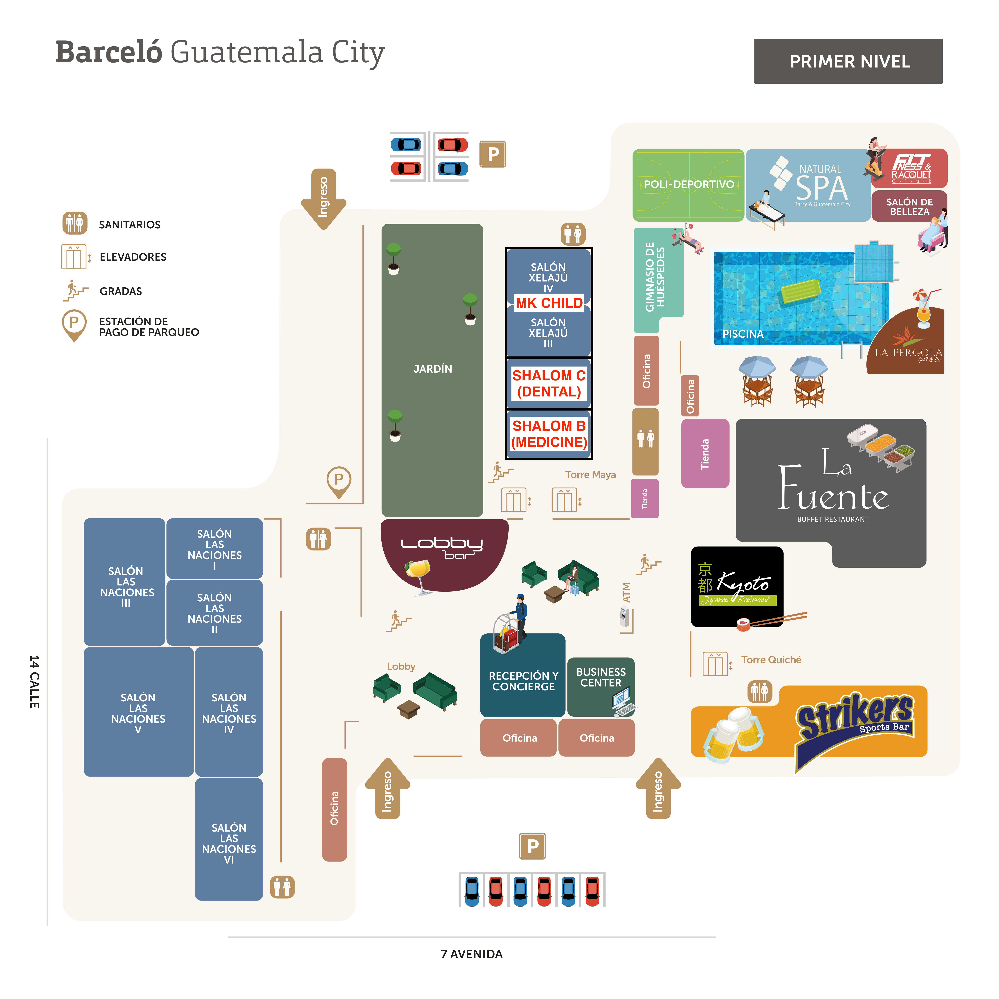
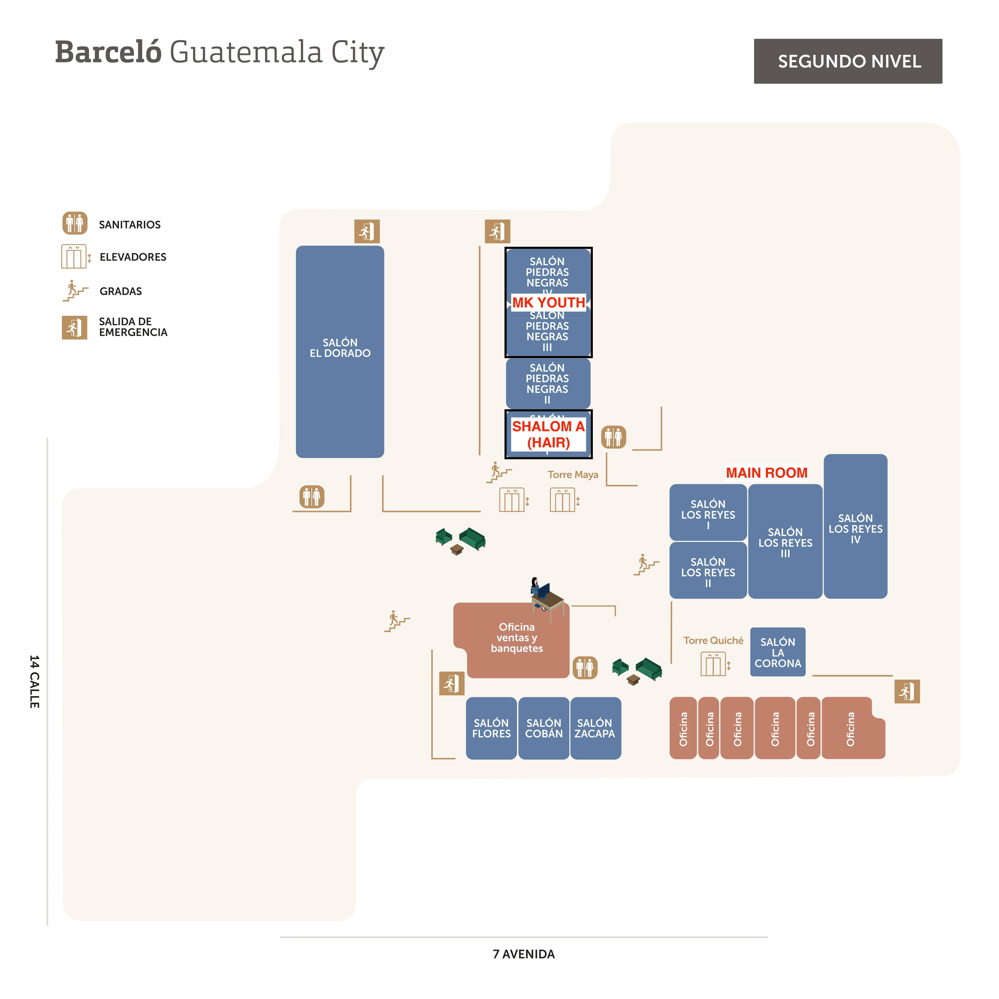

Global Mission Church
Shalom
Latin America
Shalom Latin America
Short-Term Mission Guidebook
“We are not going to be served,
but to serve.”
Contents
ContentsOur Commitment
Our Commitment“We are not going to be served, but to serve.”
- 01 Always obey the guidance of the team leaders.
- 02 Strive for unity with fellow team members.
- 03 Do not leave the mission site or act alone.
- 04 Always report to a leader before going anywhere (move in groups of 2–3 or more).
- 05 Remember that we are always little Christs.
- 06 Put others before myself and encourage one another.
- 07 Eat and drink only what is approved at the mission site.
- 08 Carry out every assigned ministry with my whole heart.
- 09 Give thanks in all things and never complain.
- 10 Never lose joy before everyone I meet.
I pledge before God and my team
to keep all of the above on my own.
Prayer Topics
Prayer TopicsPrayer for Shalom Latin America
- May God Himself lead every part and process, so that all preparation and execution unfold in His grace, and every part of the schedule is used preciously within His will.
- May the partnering Global Mission Churches of Korea, Virginia, and Washington serve with one heart, and may the pastors who preach the Word be granted wisdom and power.
- May the Lord protect the culture ministry and the Sunday Korean-church ministry that follow, so that the whole journey ends safely and in good health.
Prayer for the Shalom Latin America Team
- In the ministry shared with the missionaries and their 33 children (MKs), may every heart be opened wide and may it be a time of healing and hope.
- May every gathering, praise, and performance give glory to God, and may all who take part experience His comfort and love.
- May the hair & beauty, facial skincare, Korean-medicine, and MK teams serve without lack, and may the intercessory team be supporters who continually hold them up in prayer.
Prayer for Missionaries & MKs
- May the participating missionaries find their weary bodies and hearts restored through this event, and experience true shalom.
- May all of Latin America become an outpost for spreading the gospel through the missionaries on that land.
- May the MKs personally meet the living Lord, rediscover their identity and calling as missionary kids, and take root in faith.
Journey at a Glance
At a GlanceDates
2026. 6. 30 (Tue) — 7. 6 (Mon)
Field
Guatemala · Guatemala City
Flight Schedule
| Flight | Departure | Arrival |
|---|---|---|
| UA 1523 | Washington IAD · 6/30 (Tue) 17:52 | Guatemala GUA · 6/30 (Tue) 20:30 |
| UA 1562 | Guatemala GUA · 7/5 (Sun) 23:55 | Washington IAD · 7/6 (Mon) 06:08 |
Lodging
| Hotel | Barceló Guatemala City |
| Stay | 6/30 (Tue) — 7/5 (Sun) |
| Address | 7A Avenida 15-45, Cdad. de Guatemala 01009 |
| Phone | +502-2378-4000 |
Schedule Overview
At a Glance2026. 6. 30 (Tue) — 7. 6 (Mon) · a 7-day journey
| Date | Theme | Details |
|---|---|---|
| 6/30 Tue | Arrival & Gathering | Depart Washington (IAD) → arrive Guatemala City (GUA) · hotel check-in |
| 7/1 Wed | Opening & Welcome Night | Registration · beauty/medical service · opening worship · welcome night |
| 7/2 Thu | Focused Ministry · MK | Seminars · beauty/medical service · MK Child/Youth program · night of blessing |
| 7/3 Fri | Decision & Sending | Time of decision · check-out · to the ministry field |
| 7/4 Sat | Culture Tour | Local culture tour incl. Antigua Guatemala |
| 7/5 Sun | Local Church Visit · Return | Iglesia Visión de Fe (08:00) · Iglesia de Gracia (10:00) · Korean-church joint service (15:00) · late-night return flight |
| 7/6 Mon | Arrive Washington | Arrive Washington (IAD) · dismissal |
Full Ministry Schedule
Full ScheduleCore Shalom gatherings · 7/1 (Wed) — 7/3 (Fri) · Hotel Barceló
Beauty & Medical ①
Pastor 박승진
Pastor 김우준
program starts 08:50
Pastor 이동원
Pastor 이동원
Pastor 김우준
Pastor 이동원
program starts 09:00
Pastor 이수용
※ Times may be adjusted to local conditions. See the next “Daily Schedule” pages for details.
Daily Schedule
Daily Schedule| 07:00 — 08:00 | Ministry Prep |
| 13:00 — | Registration & check-in · Beauty/Medical ① |
| 17:00 — 18:00 | Rest |
| 18:00 — 19:00 | Dinner |
| 19:00 — 19:55 | Opening Worship — Pastor 박승진, “Abide in Me” (John 15:1–9) |
| 20:00 — 21:15 | Welcome Night — relay dance · skit · La Gloria de Dios · choir |
| 21:00 — | Rest & Sleep |
| 07:00 — 08:00 | Wake-up & Breakfast |
| 08:00 — 09:00 | Beauty/Medical ② |
| 09:40 — 12:00 | Morning Seminar — Pastor 이동원, “Lord of All & Lord of Faith / Lord of Life & Lord of Mission” |
| 12:00 — 13:00 | Lunch |
| 13:00 — 17:00 | Beauty/Medical ③④ · Afternoon Seminar (Pastor 김우준) |
| 18:00 — 19:30 | Dinner |
| 19:30 — 21:10 | Night of Blessing — Pastor 이동원, “A Community of Celebration” (John 2:1–11) |
| 21:00 — | Rest & Sleep |
| 07:00 — 08:00 | Wake-up & Breakfast |
| 09:00 — 10:15 | Time of Decision — Pastor 이수용 · Worship & Praise · prayer meeting |
| 10:00 — 11:45 | Pack & check-out |
| 12:00 — 13:00 | Lunch · travel |
| 08:00 — 09:30 | Iglesia Visión de Fe · Chimaltenango Sermon “Faith Rising Again” · John 4:46–54 · Senior Pastor 박승진 |
| 10:00 — 11:30 | Iglesia de Gracia · Chimaltenango Sermon “Faith Rising Again” · John 4:46–54 · Senior Pastor 박승진 |
| 15:00 — 16:00 | Guatemala Korean Church Joint Service — Pastor Emeritus 이동원 |
Participant Roster
Washington Team · 35Washington Global Mission Church · roster by team · ★ Leader
Speakers & Staff
- 박승진 Speaker
- 박성현 Accompanying Pastor
- 이영진 ★ Overall Leader
Korean Medicine
- 정하늘 ★
- 조맹숙
- 조철민
- 황은경
- 김학숙
- 이종선
- 송병재
- 송인숙
Hair & Beauty
- 이경호 ★
- 이경미
- 임종수
- 임진숙
- 김정화
- 정복순
Facial
- 김혜경 ★
- 김미혜
- 박호선
- 이순복
MK
- Daniel Cho ★ MK Leader
- Timothy Lee
- Esther Park
- David Park
- Tai Osunsan
- Liora Lee
- Jin Bak
- Alex Suh
- Daniel Seo
- Daniel Kim
- Danielle Lee
- Hahnbit Kang
MK (Participating)
- Sarah Jung
- Leah Jung
Mission Prep Checklist
Checklist| Category | Item | Done |
|---|---|---|
| Documents & Valuables | Passport (6+ months validity) and a copy | ☐ |
| Green card / visa documents (if applicable) | ☐ | |
| Air ticket (e-ticket) and handbook | ☐ | |
| Credit card and some cash (USD) | ☐ | |
| Clothing & Footwear | Team ministry T-shirt (for gatherings/group activities) | ☐ |
| Light outerwear (cardigan, thin jacket) | ☐ | |
| Comfortable pants, underwear, socks | ☐ | |
| Comfortable sneakers and indoor slippers | ☐ | |
| Hygiene & Medicine | Toiletries (toothbrush, toothpaste, shampoo, body wash) | ☐ |
| Personal meds (digestive, pain, motion-sickness, anti-diarrheal) | ☐ | |
| Insect repellent and bug-bite ointment | ☐ | |
| Sunscreen, sunglasses, hat | ☐ | |
| Personal water bottle (tumbler), tissues & wet wipes | ☐ | |
| Other | Bible and writing tools | ☐ |
| Phone charger and power bank | ☐ | |
| Umbrella or rain poncho (essential for the rainy season) | ☐ |
Lodging & Emergency Contacts
ContactsBarceló Guatemala City Barceló Guatemala City
7A Avenida 15-45, Cdad. de Guatemala 01009 · +502-2378-4000
Stay 6/30 (Tue) — 7/5 (Sun) · breakfast provided by hotel · 10% discount on towel laundry
Emergency Numbers & Embassies
Embassy of the Republic of Korea in Guatemala
5 Avenida 5-55 Zona 14, Edificio Europlaza, Torre 3, Nivel 7
Main +502-2382-4051~4 · Consular Call Center (24h) +82-2-3210-0404
U.S. Embassy in Guatemala U.S. Embassy
Boulevard Austriaco 11-51, Zone 16, Guatemala City
Main (incl. 24h emergency) +502-2354-0000
Washington Team Leader Contacts
Hotel Facilities · Level 1
Primer Nivel
Hotel Facilities · Level 2
Segundo Nivel
Guatemala Guide & Culture
GuatemalaBasic Info
| Capital & Population | Guatemala City · approx. 18 million (one of the most populous countries in Central America) |
| Language & Religion | Spanish (official) · 22 Mayan languages / Catholic 45%, Protestant 42% |
| Climate & Time | “Land of Eternal Spring” (cool in the highlands) / 2 hours behind US Eastern Time (summer) |
| Power & Currency | 110V · US-style plugs (A/B) / Quetzal; USD widely accepted (small bills recommended) |
Spiritual Climate & Safety
- Protestant growth — one of the most evangelical countries in Central America; locals are very familiar with the blessing greeting (Dios le bendiga).
- Syncretism — in indigenous areas, rituals blending traditional Mayan belief with Catholicism remain, so it is important to respect the culture and share the gospel wisely.
- Health — no tap water; always bottled (Agua Pura). Avoid street food; peel fruit. Carry hand sanitizer.
- Altitude — the capital and Antigua are above 1,500 m. Take it easy the first 1–2 days and stay well hydrated.
- Security — no walking alone at night, keep valuables hidden, always get consent before photographing locals. Follow the leaders’ instructions.
Food Culture
| Staples | Corn tortillas, black beans (frijoles), rice, chicken |
| Traditional Dish | Pepián — a signature thick, spicy stew of meat and vegetables |
| Coffee | World-class coffee region — a rich culture of quality coffee after meals |
Local Weather
Weather · Guatemala CityGuatemala City sits at about 1,500 m, with a cool climate often called “eternal spring.” June–October is the rainy season: mostly clear mornings with afternoon-to-evening showers or thunderstorms. Concentrate ministry and tours in the morning, and keep an umbrella and light jacket ready for afternoon rain.
| Date | Weather | Temp (low/high) |
|---|---|---|
| 6/30 Tue | ⛅Clear AM, PM showers | 18° / 25° |
| 7/1 Wed | ⛈️Clear AM, PM thunderstorms | 17° / 24° |
| 7/2 Thu | 🌧️Mostly cloudy, PM showers | 17° / 24° |
| 7/3 Fri | ⛈️Clear AM, PM thunderstorms | 17° / 25° |
| 7/4 Sat | 🌦️Partly cloudy, PM showers | 16° / 24° |
| 7/5 Sun | 🌦️Clear AM, PM rain | 17° / 24° |
| 7/6 Mon | 🌧️Cloudy, light rain | 16° / 23° |
Source: AccuWeather · World Weather Online (Guatemala City rainy-season averages)
Culture Tour · Antigua
Antigua GuatemalaThe UNESCO World Heritage city of Antigua Guatemala — a beautiful former capital where Spanish colonial Baroque architecture meets volcano views. On Saturday, July 4, we look together at the marks of God’s creation and history along the journey.
Essential Spanish Phrases
Frases en Español| Spanish | Pronunciation | Meaning |
|---|---|---|
| ¡Buenos días! | BWEH-nos DEE-as | Good morning |
| ¡Buenas tardes! | BWEH-nas TAR-des | Good afternoon |
| Mucho gusto. | MOO-cho GOOS-to | Nice to meet you |
| Mi nombre es… | mee NOM-breh es… | My name is … |
| Vengo de Estados Unidos. | BENG-go deh es-TA-dos oo-NEE-dos | I am from the United States |
| Dios le ama. | DEE-os leh AH-ma | God loves you |
| Dios le bendiga. | DEE-os leh ben-DEE-ga | God bless you |
| Voy a orar por usted. | boy ah o-RAR por oos-TED | I will pray for you |
| ¡Bendiciones! | ben-dee-see-O-nes | Blessings! |
| Gracias / No, gracias. | GRA-see-as / no GRA-see-as | Thank you / No, thank you |
| Por favor. | por fa-VOR | Please |
| Perdón / Disculpe. | per-DON / dees-KOOL-peh | Sorry / Excuse me |
| ¡Hagámoslo juntos! | ah-GA-mos-lo HOON-tos | Let’s do it together! |
| ¡Muy bien! | mooy bee-EN | Very good! |
| Es un regalo. | es oon reh-GA-lo | It’s a gift |
| Cristo te ama. | KREES-to teh AH-ma | Christ loves you |
| ¿Dónde está el baño? | DON-deh es-TA el BAH-nyo? | Where is the bathroom? |
| Necesito agua. | neh-seh-SEE-to AH-gwa | I need water |
| ¡Tengan cuidado! | TEN-gan kwee-DA-do | Be careful! |
| ¡Vamos! | VA-mos | Let’s go! |
Daily Devotional & Diary
Devotional & Diary
Begin each day with a morning devotional (Q.T),
and close it with a diary as you finish the evening ministry. From June 30 to July 6, may it be a daily time of coming before God with His Word.
{{ day.date }} · Devotional & Diary
Q.T & DiaryToday’s Passage · {{ day.ref }}
{{ day.passage }}
Morning Devotional Morning
1. What story is in today’s passage?
2. What did you discover or feel in today’s passage?
3. How can you apply today’s passage?
4. Pray over the Word and the day’s schedule.
Closing the Day Evening
What I am most thankful for today
What I realized today · finishing ministry
Prayer for tomorrow
Worship
Worship Sheet Music
MK Program Overview
Next GenerationMK Child
Ages 3–11 · in Korean
Conference room — Level 1, Xelaju 1,2
MK Youth
Ages 12–19 · in English (interpretation provided)
Conference room — Level 2, Piedras Negras 1,2
- Groups are divided by age and can also be identified by the name tags given on the first day of registration. MK Youth wear a specially made T-shirt; MK Child are not given a separate T-shirt.
- Please walk your child to the conference room and help with check-in, and please handle check-out when the program ends.
- The program runs for one day, Thursday, July 2. On Wednesday and Friday, the MKs also attend all gatherings with the missionaries.
Two Exceptions
① All MK Youth gather in the MK Youth Conference Room (Level 2, Piedras Negras) for icebreaking after the Welcome Night on 7/1 (Wed). MK Child have no separate gathering on 7/1.
② Nothing is Wasted (College Session / PK testimonies) registrants among missionaries and MKs meet 7/1, 4–6 PM in the MK Youth Conference Room.
On the following pages, meet the profiles of 33 MKs to embrace and pray for together.
MK Program Schedule · 7/2 (Thu)
MK ScheduleAt the same time slots, the missionaries, MK Child, and MK Youth each follow a different program.
| ~09:00 | Wake-up & Breakfast |
| 09:00 | Beauty/Medical ② |
| 09:40 | Seminar 1 |
| 11:00 | Seminar 2 |
| 12:00 | Lunch |
| 13:00 | Beauty/Medical ③ |
| 14:40 | Seminar 3 |
| 16:00 | Beauty/Medical ④ |
| 18:00 | Dinner |
| 19:30 | Night of Blessing |
| ~09:00 | Wake-up & Breakfast |
| 09:00 | Welcome + Games |
| 10:00 | Hands-on Activity |
| 11:00 | Word I — Children of God |
| 12:00 | Lunch |
| 13:00 | Games (snack) |
| 15:00 | Word II — The Gospel |
| 16:00 | Korean Games |
| 18:00 | Dinner |
| 19:00 | Word III — God With Us |
| 20:00 | Night of Blessing |
| 21:00 | Awards · Closing |
| ~09:00 | Wake-up & Breakfast |
| 09:00 | Session I (Worship) |
| 11:00 | Small Groups |
| 12:00 | Lunch |
| 13:00 | Games |
| 15:00 | Performance Practice |
| 16:00 | Fellowship Activities |
| 18:00 | Dinner |
| 19:30 | Session II |
| 21:30 | Snacks |
MK Child Room
Hotel Level 1 · Xelaju 1, 2
MK Youth Room
Hotel Level 2 · Piedras Negras 1, 2